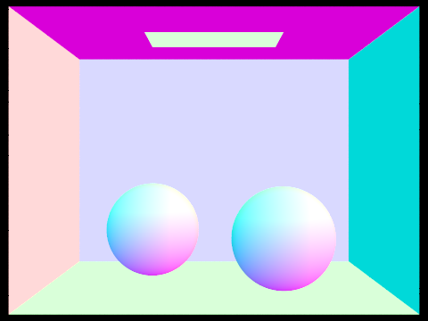
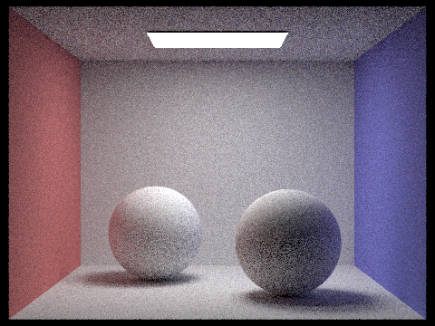

In this project, I implemented a simple path tracer, capable of rendering images with global illumination and adaptive sampling to improve efficiency. To achieve realistic light behavior, we model light rays as mathematical rays. At a high level, we fire rays from a camera point into the scene until an intersection is found. There we sample rays to all lights in the scene to measure the direct lighting. Then we sample another ray into the scene representing indirect lighting and trace the bounced ray recursively.
In the main sample loop, we iterate over all pixels. To find the spectrum of a pixel, we sample points in the pixel, generating rays originating from the camera through the sampled point. We trace the ray throughout the scene until we find an intersection with a primitive. There we record the estimated direct and indirect lighting and take that as the sample value. We find intersections with triangles using the Möller Trumbore Algorithm and with spheres by solving the sphere intersection equation. To make this strategy practical for meshes with large numbers of primitives, we break the bounding box into a bounding volume hierarchy, splitting the box into a tree structure, meaning rays only need to test for intersection with a subset of objects rather than every object in the scene. To further improve the efficiency of the algorithm, adaptive sampling rates allow for pixels that converge early to quit the sample loop so as to not waste samples
Part 1: Ray Generation and Scene Intersection
In part 1, I implemented the pixel sampling loop in raytrace_pixel, along with intersection test for
both triangle and sphere primitives.
Task 1: Filing In the Sample Loop
In the sampling loop, for a given pixel origin (x, y), ns_aa samples are evaluated. In
each sample, a random offset [0, 1]^2 is obtained through the pathtracer's gridSampler
(this offset is (0.5, 0.5) if ns_aa == 1). The sample point then this offset added to
the pixel's origin. We normalize the sample point into the range [0, 1]^2 by dividing by point's x
value by the sampleBuffer's width, sampleBuffer.w and the point's y value by the sampleBuffer's
height, sampleBuffer.h:
Vector2d origin = (x, y);Vector2d samplePoint = ns_aa == 1 ? origin + (0.5, 0.5) : origin + gridSampler->get_sample(); samplePoint.x /= sampleBuffer.w; samplePoint.y /= sampleBuffer.h;
This sample point is then passed to camera->generate_ray, returning a ray from the camera passing
through the sample point. Setting the ray's maximum depth to max_ray_depth, we now call trace_ray
to obtain the sampled Specturm that the pixel should display in the rendered image. This is added to a summing
variable. After all samples are made, we average return the average Specturm by dividing by the number of
samples performed.
Ray ray = camera->generate_ray(samplePoint.x, samplePoint.y); ray.depth = max_ray_depth;Spectrum L = trace_ray(ray, true); sum += L;// After all samples return sum / num_samples;
Task 2: Generating Camera Rays
To generate camera rays, the screen was considered to be a plane one unit away from the camera point as shown in the following image:
Here calculations are done in camera coordinates, where the +y axis points upwards from the camera,
the +x axis points to the right, and the -z axis points in the direction of the
camera's view. Using the camera's provided field of view angles hFov and vFov, we can
calculate the coordinates of the sensor plane using the formulas:
Vector3D bot_l = (-tan(radians(hFov)*.5), -tan(radians(vFov)*.5), -1);Vector3D top_r = ( tan(radians(hFov)*.5), tan(radians(vFov)*.5), -1);
We convert the input scaled sample point from before into a point on the sensor plane defined by the points above
such that (0, 0) lies at the bottom left and (1, 1) lies on the top right. To do so,
we can just linearly interpolate using the input (x, y) pair:
double sensor_x = bot_l.x + x * 2 * top_r.x;double sensor_y = bot_l.y + y * 2 * top_r.y;Vector3D sensorPoint = (sensor_x, sensor_y, -1);
Because the camera lies at the origin of camera space, the direction vector of our ray is the same as just hte sensorPoint. Converting to world coordinates and normalizing, we get our camera ray:
Ray camera_ray = Ray(pos, c2w * sensorPoint);
Task 3: Intersecting Triangles
To find whether or not a given ray intersects a triangle, I used the Möller Trumbore Algorithm, pictured below from the lecture slides:

We are given a ray r, the points of the triangle p1, p2, p3, as well as the corresponding vector normals n1, n2, n3. To implement the algorithm, we simple translate it into code, first finding all needed componenets:
Vector3D e1(p2 - p1), e2(p3 - p1);// Here the points are one indexed. Vector3D s(r.o - p1), s1(cross(r.d, e2)), s2(cross(s, e1));
And then performing the multiplication:
Vector3D matrix(dot(s2, e2), dot(s1, s), dot(s2, r.d));Vector3D t_b1_b2 = matrix / dot(s1, e1);
Using the resulting vector, we can obtain the barycentric coordinates of the intersection with the triangle plane. Should any of the coordinates be out of the range [0, 1] or t be out of the range [r.min_t, r.max_t], we return there was no hit.
double t = intersection.x;double alpha = intersection.y;double beta = intersection.z;double gamma = 1 - alpha - beta;// gamma * p1 + alpha * p2 + beta * p3 yeilds the desired point
Finally if there is a hit, we can populate the intersection with the relevant parameters, updating the ray's max_t and interpolating a normal vector if necessary:
isect->n = alpha * n2 + beta * n3 + gamma * n1;
Task 4: Intersecting Spheres
Lastly for part 1, I implemented the intersection test for a sphere. Given the ray, center of the sphere, and radius of the sphere, we can derive the parameter t at which the ray intersects the sphere:
r = r.o + t * r.d // Formula for ray over parameter t
(p - c)^2 - R^2 = 0 // Points on sphere
(r.o + t * r.d - c)^2 - R^2 = 0 // Substituting in the ray equation
This formula can be rearanged into the form: at^2 + bt + c = 0 with coefficient values:
double a = dot(r.d, r.d);double b = dot(2 * (r.o - o), r.d);double c = dot((r.o - o), (r.o - o)) - R * R;double determinant = b * b - 4 * a * c;
If the determinant is negative, then we know there is no solution for the intersection of the ray with the sphere. Otherwise we solve using the quadratic formula for t_pls and t_min, returning the smaller of the two as t1 and the larger as t2 (if they are the same, then there is only one intersection and it doesn't matter which is which). Should t1 be non-negative, then we know that is the closest intersection point with the sphere. Otherwise, we take t2 if it is non-negative. Otherwise, we know then that the sphere lies behind the ray origin and no intersection occurred.
Finally we populate the intersection with the proper values and update the ray's max_t, obtaining the normal of the intersection by taking the point of intersection (Found by plugging the parameter back into the ray intersection), subtracting from the sphere's center, and normalizing.
Renderings:
|

|
|
|
|
|
Part 2: Bounding Volume Hierarchy
To improve the efficiency of the pathtracer, in part 2, we break up the mesh into a bounding volume hierarchy so that a ray doesn't need to be tested against every primitive, instead searching down the bvh nodes with which it intersects until it reaches a node, where it then tests against the remaining privatives.
Task 1: Constructing the BVH
We start out with a single BVH node containing all the primitives in the mesh and find the bounding box of both the primitives and their centroids. If there are more primitives that the maximumt leaf size, we will split the primitives into two new nodes, using the midpoint of the longest axis as the deciding point. If a primitives centroid is less than the split point, then it will be pushed into the left node's vector, otherwise it gets pushed into the right node's, roughly evenly splitting the mesh into two halves along this axis. The pseudocode is below:
BBox centroid_box, bbox;for (Primitive p in primitives) { bbox.expand(p.bbox); centroid_box.expand(p.bbox.centroid); }if (primatives.size() > max_leaf_size) {vector left, right; longest_axis_length = max(centroid_box.extent.x, centroid_box.extent.y, centroid_box.extent.z); split_point = centroid_box.min.i + longest_axis_length / 2;// i is x, y, or z according to longest_axis for (Primitive p in primitives) { if (p.bbox.centroid.i < split_point) left.add(p); else right.add(p); } node.left = construct_bvh(left, max_leaf_size); node.right = construct_bvh(right, max_leaf_size); }
To protect from the edge case in which all primitives wind up in the same node, which can happen if they share the same centroid, we add in an additional check. If we find either child node is empty, we just pop a primitive from the full node to the other.
if (left.empty()) {Primitive to_switch = right.pop(); left.push_back(to_switch); }else if (right.empty()) {Primitive to_switch = left.pop(); right.push_back(to_switch); }
Without this check, we could wind up with infinite recursion as the algorithm would place all the primitives into the same node, meaning the any subsequent recursive calls on that node would have the same primitives, never shrinking the number to reach the base case where there are fewer than the maximum leaf size.
Task 2: Intersecting BBox
To decide whether or not we need to check a BVH node, we need to figure out if a ray intersects the node's bounding box. To do so, we treat the bounding box as an intersection of 3 slabs, each slab being made of two planes. For each slab, we find the time range for which the ray intersects the slab by finding the time of intersection with the two planes that make up the slab, using the following formula:
Additionally, because the bounding box planes are axis aligned, their normal vectors isolate one component, x y or z, or the vectors they multiply, meaning we can simplify this into an equation of the form:
The equation above is for the zy slab as it's normal vectors are (1, 0, 0), isolating the x components of the vectors it is dottet with. Having this, along with a point on both planes (min and max) we can then find the intersection range of a ray with the xy slab using the following pseudocode:
double xyt0, xyt1;if (r.d.z == 0) {if (min.z <= r.o.z && r.o.z <= max.z) { xyt0 = -INFINITY; xyt1 = INFINITY; }else {return false; } }else { xyt0 = (min - r.o).z / r.d.z; xyt1 = (max - r.o).z / r.d.z; if (xyt0 > xyt1) swap(xyt0, xyt1); }
The first case is for the case where the ray is parallel to both planes. If the ray originates within the slab, then it always intersects the slab, otherwise, it'll never intersect with the slab. Otherwise we find the intersection times for both planes, making sure the range is ordered correctly. We repeat for all 3 slabs. We then test if there is a common intersectoin between the three ranges if all slabs intersect the ray:
t0 = max(xyt0, xzt0, yzt0); t1 = min(xyt1, xzt1, yzt1);if (t0i > t1i)return false;
Finally, if we find a common intersection, then we update t0 and t1 if the intersection lies in that range, return true, that an intersection is found.
Task 3: Intersecting BVHAccel
Now with the ability to test a ray's intersection with a bounding box, we can write the accelerated intersection function. The algorithm first tests whether or not the ray of interest intersects the current BVH node, starting with the root. If no intersection occurs, then we return false, no intersection occured. Otherwise, we check if the intersection time lies within the ray's min_t and max_t. This speeds up the algorithm further so that we don't need to look at intersections that occur after the earliest known intersection. If the ray fails this test, we again return false. From here, if the node is a leaf node, we iterate through every primitive in the node and check for an intersection. If we just want to know whether or not an intersection occurs, we can stop at the first and return true. Otherwise, we must continue to search as the first found is not necessarily the earliest. Finally, if the node is not a leaf, we must then recurse on both the left and right nodes. Again, if we just want to know if there is an intersection, we can short circuit on either node, but if we wish to find the earlier, both nodes must be searched. In pseudocode:
if (not node.bbox.intersect(ray, t0, t1))return false;if (t1 < ray.min_t or t0 > ray.max_t)return false;if (node.is_leaf()) {for (Primitive p in node.primitives) { if (p.intersect(ray)) hit = true; } }else { hit = intersect(ray, node.L); hit = intersect(ray, node.R) or hit; }return hit
I had for a while an issue where some objects were being drawn out of order. I was puzzled for a while until I switched the order in which I made the two intersect calls. This seemed to replicate the problem on the other side of the scene. At this point I remembered that short-circuiting was a thing and so a hit in the first intersect call would mean the second node would not be teseted at all. Thus changing intersect(ray, node.L) || intersect(ray, node.R) to the code above fixed the issue.
Renderings:
|
|
|
Part 3: Direct Illumination
In part 3, I implemented the direct illumination function, allowing direct lighting effects like shadows to be displayed. The given skeleton code already calculates in local coordinate system for the intersection the hit point hit_p or the ray as well as the vector from the point to the camera w_out.
For every scene light in the scene, we take ns_area_light sample rays (unless the light is a delta light, where we only take 1). For each sample, we sample an incoming vector using sample_L, returning the incoming vector from the hit point outwards in world coordinates wi, the distance to the light, the probability of taking the sample, and the incoming radiance from the sampled direction. We then convert the incoming vector to local coordinates and check to make sure the intersection occurs in the direction of the ray (so as to not be behind the hit point) by ensuring the incoming vector's z component is non-negative.
for (sceneLight in lights) {int samples = 1if sceneLight.is_delta_light() else ns_area_light;Spectrum sample_sum;for (i = 0, 1, ..., samples) {Spectrum Li,Vector3D wi,float pdf, distToLight = sceneLight.sampleL(hit_p);Vector3D w_in = w2o * wi;// Converting to local coordinates if (w_in.z < 0)continue ; ...
Now, having a ray to the light, we need to make sure that the path to the light is not obstructed. We create a shadow ray, originating at the hit point with a direction vector towards the light: shadow_ray = Ray(EPS_D * wi + hit_p, wi, distToLight). We offset the hit point by a factor EPS_D to make sure the shadow ray doesn't intersect the hit point itself. We also set it's max distance to be the distance to the light, as we don't care about intersections after the ray has reached the light. If we find that there is any intersection between the shadow ray and the light, we know that the sampled incoming radiance does not contribute to the specturm at the hit point as the light from the scene light is obstructed, so we continue the loop. If we find no obstacle, we convert the radiance into an irradiance by multiplying by cosine of the angle between the normal at the hit point and the incoming light vector, which is just their dot product and then multiplying by the bsdf evaluated with w_in and w_out to get the sampled outgoing radiance at the point. Finally we need to divide by the returned probability from before to account for the fact the probability distribution can bias the sampling towards certain parts of the light. This ensures that samples that may be biased to have higher probabilities don't get overweighed in the sum and samples that may be biased to have lower probabilities won't be underweighted.
...
Ray shadow_ray(EPS_D * wi + hit_p, wi, distToLight);
if (not bvh.intersect(shadow_ray)) continue ;
Spectrum f = bsdf(w_out, w_in);
sample_sum += f * Li * fabs(dot(normal, wi)) / pdf;
}
L_out += sample_sum / samples;
}
We sum the sampled radiances and then divide by the number of samples made to get and average radiance from the hit point for the scene light, which is accumulated into L_out over all scene lights. This L_out value is then returned as the direct lighting estimate.
Renderings with Direct Lighting

|
|
|
|
Comparing Soft Shadow Noise Levels (sky/CBspheres.dae, s=1)
|
|
|
|
|
|
|
|

|
We can easily see that at just 1 sample, there is a large amount of noise in the soft shadow as the one sample makes up the entire value of the shadow at any given point. Should the sampled ray be obstructed, then the point is dark, even if another ray from the pint can easily reach the light. As the number of light samples increases, we see that the shadow eventually converges and the noise becomes drastically reduced, reflecting the true value of the soft shadow if we were to actually integrate over the hemisphere at any point. Averaging the values of many rays paints a more accurate rendering of the scene as the many samples means that the monte carlo integration is more representative of it's expected value, the variance declining as the sample size rises.
Part 4: Indirect Illumination
In part 4, I implemented the addition of indirect lighting and their contributions to the radiance of a point, allowing for bounced light and color bleeding.
Again, like in part 3, we already have the hit point, hit_p, and the outgoing vector from the hit point to the camera in local coordinates w_out. At this point, we take another sample outwards using the bsdf->sample_f function, taking in the outgoing vector w_out and returning a sampled incoming radiance direction vector w_in, the probability of choosing that sample, and the evaluation of the bsdf at w_out, w_in.
Spectrum f,Vector3D w_in,float pdf = bsdf.sample_f(w_out);
Next we need to decide on the russian roulette termination probability based on the reflectance of the returned BSDF spectrum. The higher the reflectance, the less likely we want the ray to terminate as indirect lighting will have a greater effect on the point's spectrum. As suggested I also scaled the reflectance to ensure that the probability is not too low and rays get terminated overly soon. Using the coin_flip method, we decide whether or not to continue tracing.
float termination_prob = 1 - clamp(f.illum() * 15 + 0.05, 0, 1);if (coin_flip(termination_prob)return Spectrum (0, 0, 0);
If we continue tracing, we created a new ray representing the direction of the contributing indirect light, again modifying the origin by EPS_D to avoid instantly intersecting with the same hti point. Calling trace_ray, we recursively trace this ray and get an approximation for the incoming radiance. We then convert the incoming radiance again into an irradiance as in part 3 by multiplying by the dot product between the normal and the incoming radiance direction vector. We then convert this into an estimate of the outgoing radiance from the point by multiplying by the BSDF spectrum from before and dividing by the probability of sampling the w_in direction as well as the probability of not terminating (or 1 minus the termination probability). This again accounts for possible bias in the russian roulette termination probability.
Vector3D wi = o2w * w_in;// Converting from local to world coordinates wi.normalize();Ray bounced(EPS_D * wi + hit_p, wi); bounced.depth = r.depth - 1;return trace_ray(bounced, isect.bsdf->is_delta()) * f * fabs(dot(wi, isect.n)) / (pdf * (1 - tpdf));
We set the bounced ray's depth to 1 less than the input ray's depth to ensure termination and we don't trace recursively too many times.
Renderings with Global Illumination
|
|
|
|
|
Direct Illumination vs Indirect Illumination
| Direct Only | Indirect Only |
|---|---|
|
|
|
In the direct image, only points with a direct path to the light are illuminated, meaning many areas are darker or even completely in darkness without the contribution from indirect lighting. We see in the image with indirect illumination, the light is much more distributed over the image as the points spectrums are completely dependent on bounced light only. We see the indirect image lacks the brightness in lit areas from the direct illumination photo as the light loses evergy after bouncing at angles, lacking the amount energy from that first direct bounce shown in the direct image.
Comparison of Max Ray Depths with sky/CBbunny.dae (s=1028, l=4)
|
|
|
|
|
|
|
|
|
We see that with only direct lighting (m=0), no bounced lighting is included. The ceiling and areas underneath the rabbit are completely dark as they are out of direct view of the light, even though in reality light bouncing off the walls and floor should partially illuminate them. As we increase the max ray depth to 1, we see a great deal of improvement. The ceiling is now visible as well as the underside of the rabbit. We see the area underneath the rabbit's front paws and rear are still very dark as a single bounce likely was not able to reach a light. Increasing the max depth to 2, we now see that the dark area is much improved. This trend continues with more bounces, the shadow under the rabbit's rear also becoming more gradual as the increased bounces allow a path to be found to the light source. We can also see the trend in the change of the ceiling corners and edges as the brightness generally increases as the max ray depth increases.
Additionally, we also see that as the max ray depth increases, the amount of color bleeding on the bunny and the bunny's shadow increases as more bounced rays from the walls contributes to the color on the points.
Comparison of Various Sample Rates (l=4, m=5)
| sky/CBspheres.dae | sky/CBbunny.dae |
|
|
|

|
|
|
|

|
|

|
|
|
|
|
|
|
|
|
|
|
With only a single sample, there is a very large amount of noise in the image as the variance with just one sample is high. As we increase the number of samples, we see that the quality of the image improves as the pixel spectrums converge. Their variance drops as the number of samples increases and we get close to their expected values, meaning more realistic and clearer renders with less noise. We see that the noise is still apparent up until 64 samples, but at 1024 samples per pixel, it's much harder to tell it's a rendered image as there is so little noise.
In this part, I had some trouble with having the spheres be darker than in the reference image. It took a while to locate the issue, but it turns out that I had used the norm() function, which does not modify the vector, in the sphere intersection code rather than normalize(), which actually normalizes the vector. Switching out the code quickly remedied the issue.
Part 5: Adaptive Sampling
We can make a small adjustment to the raytrace_pixel function so that we can stop short of using the full number of samples on pixels that converge quickly, making our pathtracer more efficient. To implement the algorithm, we need to keep track of two variables, s1, a running sum of the illuminances of the samples, and s2, a running total of the squares of the illuminances. Using these values, we can calculate the mean and variance of the pixel's value and use it to decide on whether or not the pixel has converged. We can then add this additional code in each sample after our original code.
float illum = sample.illum(); s1 += illum; s2 += illum * illum;if ((n-1) % samplePerBatch == 0 && n != 1) {// n is the current number of samples float mean = s1 / n;float var = (1.f / (n - 1)) * (s2 - (s1 * s1) / n);double I = 1.96 * sqrt(var) / sqrt(n);if (I <= max_tolerance * mean)break ; }
I here is a measure of the pixel's convergence. If I falls under the threshold max_tolerance * mean, we can with a large amount of confidence say that the pixel's value has converged and we can quit sampling and break out of the for loop. To prevent the overhead from getting too large, we only check for this condition every samplePerBatch samples (and not on the first sample).
|
|
|
|
|
|
|
|
|
In this part, I had a bug where when the number of samples got very large, the resulting render would be much darker than it should have been. This turned out to be because I had been always dividing by the total number of samples to average the spectrum, even when the pixel converged early. This meant that for renders with many samples, the brightness of the pixels that converge quickly would be severely dampened, divided by a huge number. After Austin helped point out the error at the project party, it was quickly remedied by just dividing by the true number of samples.